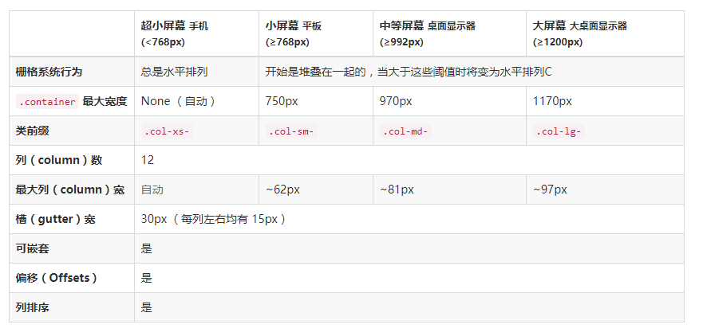

简洁、直观、强悍的前端开发框架，让web开发更迅速、简单。
Bootstrap 是最受欢迎的 HTML、CSS 和 JS 框架，用于开发响应式布局、移动设备优先的 WEB 项目。
v2 已停止更新
v3 兼容IE8+
v4 最新版
全局样式
1、bootstrap 中用到一些 HTML元素和CSS属性需要将页面设置为 HTML5 文档类型，即在页面顶部添加“<!DOCTYPE html>”
2、布局容器：Bootstrap 需要为页面内容和栅格系统包裹一个 .container或container-fluid（占据全部视口viewport的容器）容器。
3、栅格系统，Bootstrap 提供了一套最多12列的流式栅格系统，通过 .row表示行 和 .col-xs-4 这种表示宽度的列快速创建栅格布局。
4、Bootstrap 排版、链接样式设置了基本的全局样式。
font-size 设置为 14px，line-height 设置为 1.428。
<p> （段落）元素还被设置了等于 1/2 行高（即 10px）的底部外边距（margin）。
Grid system ---- 固定的格子设计版面布局
栅格系统用于通过一系列的行（row）与列（column）的组合来创建页面布局，你的内容就可以放入这些创建好的布局中。
1 栅格系统的种类
Container---固定宽度且居中，把页面放在一个.container（固定宽度且居中）的盒内；
container-fluid ---流式布局，把页面内容放在一个宽度为100%的盒内；
将container 或 container-fluid 盒水平向划分为12等分，使用row作为父级盒，内部可以水平排列一组子盒，宽度可以为总宽度的 1/12----12/12 ；
结构
<div class="container">
<div class="row">
<div class="col-md-6"></div>
<div class="col-md-6"></div>
</div>
</div>
（1）临界值(视口尺寸)

（2）栅格原理
1) 一个row最多能容纳12个栅格单位，超出会换行;
2) 对于sm、md、lg，视口大于临界值，水平布局，小于临界值会垂直布局；
3) 对于xs，列块始终是水平布局；
（3）混合使用
当xs，sm， md， lg混合使用：
1) 垂直布局临界值以小屏幕的优先
2) 区块宽度以大屏幕优先
（4）列重置
为解决列高度不一致可能导致的问题，可以加入
<div class="row">
<div class="col-md-6"></div>
<div class="col-md-6"></div>
<div class="clearfix visible-xs"></div>
clearfix 清浮动
visible-xs 只有在xs生效尺寸范围内(<768px)显示
（5）列偏移
col-sm-offset-4 向右偏移4个sm单位
col-md-offset-2 向右偏移2个md单位
col-xs-offset-5 向右偏移5个xs单位
列偏移：通过margin实现
（6）列嵌套
子列宽度是相对于父级盒的宽度
（7）列排序
Col-md-push-3 列相对于原来的位置向右偏移3个md单位；
Col-md-pull-9 列相对于原来的位置向左偏移9个md单位；
全局class
表格、表单、按钮、导航。。。
如何学习bootstrap
1、栅格系统
2、背class
3、复制官网demo